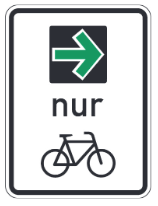

§ 37
Wechsellichtzeichen, Dauerlichtzeichen und Grünpfeil
(1) Lichtzeichen gehen Vorrangregeln und Vorrang regelnden Verkehrszeichen vor. Wer ein Fahrzeug führt, darf bis zu 10 m vor einem Lichtzeichen nicht halten, wenn es dadurch verdeckt wird.
(2) Wechsellichtzeichen haben die Farbfolge Grün – Gelb – Rot – Rot und Gelb (gleichzeitig) – Grün. Rot ist oben, Gelb in der Mitte und Grün unten.
- An Kreuzungen bedeuten:
Grün: "Der Verkehr ist freigegeben".
Er kann nach den Regeln des § 9 abbiegen, nach links jedoch nur, wenn er Schienenfahrzeuge dadurch nicht behindert.
Grüner Pfeil: "Nur in Richtung des Pfeils ist der Verkehr freigegeben".
Ein grüner Pfeil links hinter der Kreuzung zeigt an, dass der Gegenverkehr durch Rotlicht angehalten ist und dass, wer links abbiegt, die Kreuzung in Richtung des grünen Pfeils ungehindert befahren und räumen kann.
Gelb ordnet an: "Vor der Kreuzung auf das nächste Zeichen warten".
Keines dieser Zeichen entbindet von der Sorgfaltspflicht.
Rot ordnet an: "Halt vor der Kreuzung".
Nach dem Anhalten ist das Abbiegen nach rechts auch bei Rot erlaubt, wenn rechts neben dem Lichtzeichen Rot ein Schild mit grünem Pfeil auf schwarzem Grund (Grünpfeil) angebracht ist.
durch das Zeichen

wird der Grünpfeil auf den Radverkehr beschränkt.
Wer ein Fahrzeug führt, darf nur aus dem rechten Fahrstreifen abbiegen.
Soweit der Radverkehr die Lichtzeichen für den Fahrverkehr zu beachten hat, dürfen Rad Fahrende auch aus einem am rechten Fahrbahnrand befindlichen Radfahrstreifen oder aus straßenbegleitenden, nicht abgesetzten, baulich angelegten Radwegen abbiegen.
Dabei muss man sich so verhalten, dass eine Behinderung oder Gefährdung anderer Verkehrsteilnehmer, insbesondere des Fußgänger- und Fahrzeugverkehrs der freigegebenen Verkehrsrichtung, ausgeschlossen ist.
Schwarzer Pfeil auf Rot ordnet das Halten, schwarzer Pfeil auf Gelb das Warten nur für die angegebene Richtung an.
Ein einfeldiger Signalgeber mit Grünpfeil zeigt an, dass bei Rot für die Geradeaus-Richtung nach rechts abgebogen werden darf.
- An anderen Straßenstellen, wie an Einmündungen und an Markierungen für den Fußgängerverkehr, haben die Lichtzeichen entsprechende Bedeutung.
- Lichtzeichenanlagen können auf die Farbfolge Gelb-Rot beschränkt sein.
- Für jeden von mehreren markierten Fahrstreifen (Zeichen 295, 296 oder 340) kann ein eigenes Lichtzeichen gegeben werden. Für Schienenbahnen können besondere Zeichen, auch in abweichenden Phasen, gegeben werden; das gilt auch für Omnibusse des Linienverkehrs und nach dem Personenbeförderungsrecht mit dem Schulbus-Zeichen zu kennzeichnende Fahrzeuge des Schüler- und Behindertenverkehrs, wenn diese einen vom übrigen Verkehr freigehaltenen Verkehrsraum benutzen; dies gilt zudem für Krankenfahrzeuge, Fahrräder, Taxen und Busse im Gelegenheitsverkehr, soweit diese durch Zusatzzeichen dort ebenfalls zugelassen sind.
- Gelten die Lichtzeichen nur für zu Fuß Gehende oder nur für Rad Fahrende, wird das durch das Sinnbild "Fußgänger" oder "Radverkehr" angezeigt. Für zu Fuß Gehende ist die Farbfolge Grün-Rot-Grün; für Rad Fahrende kann sie so sein. Wechselt Grün auf Rot, während zu Fuß Gehende die Fahrbahn überschreiten, haben sie ihren Weg zügig fortzusetzen.
- Wer ein Rad fährt, hat die Lichtzeichen für den Fahrverkehr zu beachten. Davon abweichend sind auf Radverkehrsführungen die besonderen Lichtzeichen für den Radverkehr zu beachten. An Lichtzeichenanlagen mit Radverkehrsführungen ohne besondere Lichtzeichen für Rad Fahrende müssen Rad Fahrende bis zum 31. Dezember 2016 weiterhin die Lichtzeichen für zu Fuß Gehende beachten, soweit eine Radfahrerfurt an eine Fußgängerfurt grenzt.
(3) Dauerlichtzeichen über einem Fahrstreifen sperren ihn oder geben ihn zum Befahren frei.
Rote gekreuzte Schrägbalken ordnen an:
"Der Fahrstreifen darf nicht benutzt werden".
Ein grüner, nach unten gerichteter Pfeil bedeutet:
"Der Verkehr auf dem Fahrstreifen ist freigegeben".
Ein gelb blinkender, schräg nach unten gerichteter Pfeil ordnet an:
"Fahrstreifen in Pfeilrichtung wechseln".
(4) Wo Lichtzeichen den Verkehr regeln, darf nebeneinander gefahren werden, auch wenn die Verkehrsdichte das nicht rechtfertigt.
(5) Wer ein Fahrzeug führt, darf auf Fahrstreifen mit Dauerlichtzeichen nicht halten.